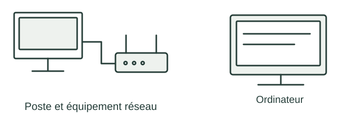

OBSERVER · EXPÉRIMENTER · EXPLIQUER
Un message traverse Internet
Fais avancer un paquet, puis reconstruis une petite image en pixels.

✎ Garde ta feuille à côté de toi.Prévois sur papier → manipule → observe → rédige sur papier.
Des observations pour expliquer
- Q2–Q3 : dessine le motif et les trajets sur papier. Calcule la taille de l’image.
- Q1 et Q5 : les calculs de codage et de durée restent à faire sur ta feuille.
Appuie ton explication sur une valeur, un changement observé ou une comparaison. Distingue ce que montre le modèle et ce qui reste à vérifier.